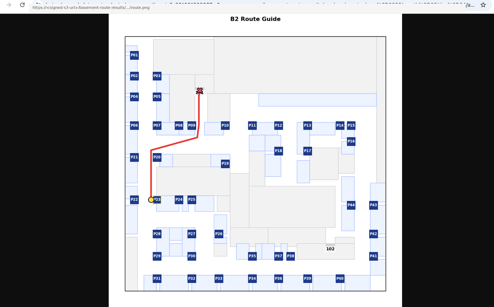
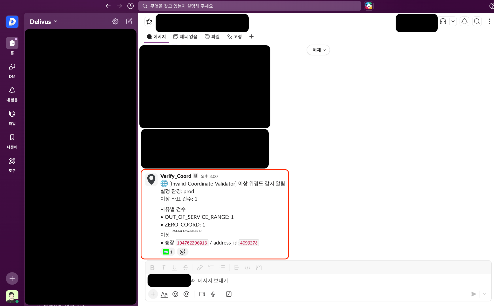
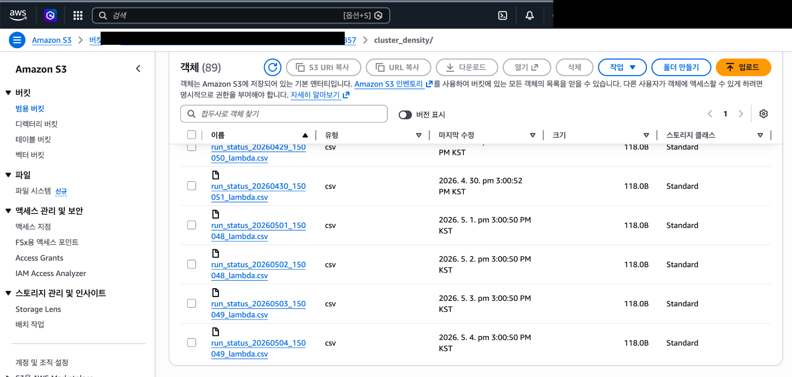
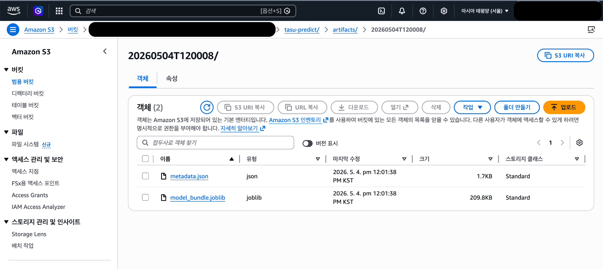
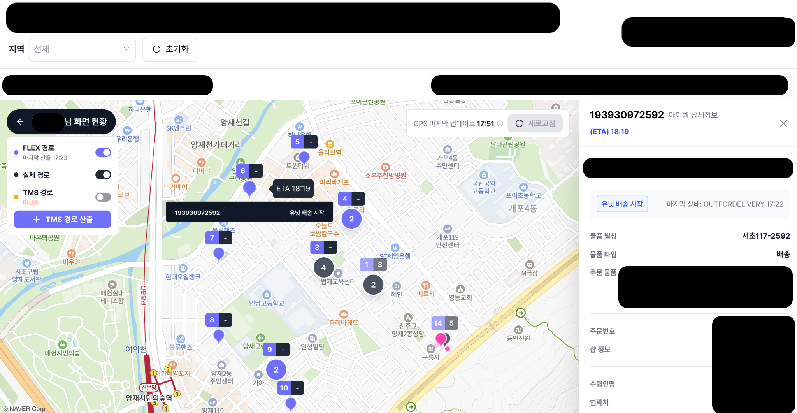
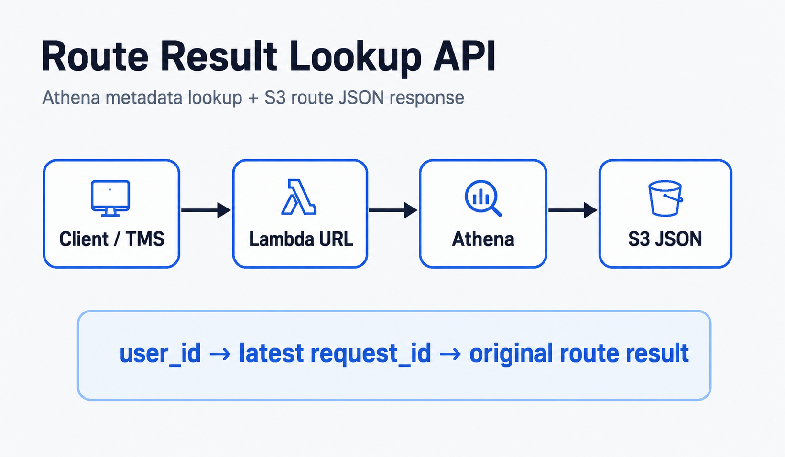

ABOUT ME
안녕하세요, MLOps/Data Scientist 정현수입니다.
저는 운영 현장의 문제를 데이터·머신러닝·서버리스 시스템으로 해결해 실제 성과로 연결하는 일을 지향합니다. 데이터 분석에 머무르지 않고, 문제 정의 → 데이터 파이프라인 → 모델링 → 최적화 알고리즘 → 클라우드 배포 → 운영 모니터링까지 End-to-End로 구현하는 경험을 쌓아왔습니다.
딜리버스(Delivus)에서는 당일배송 운영 효율화를 위해 우편번호 기반 클러스터링 엔진, 최대 배송량 예측 모델, 실시간 경로최적화 API, ETA 예측 시스템, 좌표 품질 검증 및 클러스터 밀집도 모니터링 Lambda를 개발·운영했습니다.
39.5분 → 24.3분
141.3m → 110.05m
15.55초 → 5.38초
저는 실제 운영 데이터와 현장 제약을 이해하고, 이를 ML 모델·최적화 로직·AWS 기반 자동화 시스템으로 구현해 운영 효율과 서비스 품질을 함께 높이는 일을 목표로 합니다.
CONTACT
Email
hyeonsuj48@gmail.com
EDUCATION
숭실대학교 산업정보시스템공학과
산업공학, 데이터 분석, 시스템 최적화, 정보시스템 기반 문제 해결 역량 학습
플레이데이터 엔코아 아카데미 데이터애널리시스 과정
플레이데이터 엔코아 아카데미에서 데이터 애널리시스 과정을 수료하였습니다. 이 과정에서 Python을 활용한 데이터 분석과 인공지능 모델 학습에 집중하며, Pandas, Scikit-learn 등 머신러닝 라이브러리와 TensorFlow를 깊이 있게 다루었습니다. 또한 데이터 전처리, 분석 및 시각화를 통해 다양한 프로젝트를 수행하였고, FastAPI와 AWS EC2를 활용해 머신러닝 모델을 서빙하고 배포하는 경험도 쌓았습니다. 팀 프로젝트를 통해 Git, GitHub, Slack, Notion을 사용한 협업의 중요성을 배웠으며, 효과적인 커뮤니케이션과 협업 능력을 강화할 수 있었습니다.
SKILLS
Programming & Data Engineering
- Python 기반 데이터 파이프라인 구축 및 운영 자동화
- SQL(MySQL/PostgreSQL/Athena)을 활용한 배송 운영 데이터 조회·정제·분석
- Pandas, NumPy 기반 배치성 학습/추론 데이터 처리
- rule-based validation, reason code 분류, Slack 알림 자동화
Machine Learning & Data Science
- LightGBM, Scikit-learn 기반 배송 소요시간·작업시간(tasu) 예측 모델 개발
- 지역·요일·시간대·물량·기사 스케줄 기반 Feature Engineering
- S3 기반 model artifact, metadata, latest pointer 저장 구조 설계
- 예측 결과를 MAX, ETA 등 운영 의사결정 지표로 변환
MLOps & Serverless Automation
- AWS Lambda, SAM, Docker Image 기반 서버리스 ML/최적화 파이프라인 배포
- EventBridge 기반 일일 학습·추론·검증 자동화
- S3, DynamoDB, Athena, CloudWatch, Slack Webhook, Google Sheets API 연동
- Lambda Function URL 기반 운영 API 구현 및 예외 처리·로그 표준화
Optimization, Routing & Spatial Data
- KMeans++와 운영 제약 조건을 결합한 우편번호 기반 클러스터링 엔진 개발
- GeoPandas, Shapely 기반 공간 매칭, 좌표 검증, convex hull 밀집도 계산
- OSRM 기반 도로망 거리·시간 매트릭스 생성 및 ITS 실시간 교통정보 반영
- ALNS 기반 TSP 방문 순서 최적화, A* 기반 실내 경로 탐색
Cloud & Infrastructure
- AWS EC2, S3, RDS, Lambda, DynamoDB, Athena 기반 데이터/모델 운영 인프라
- Docker 기반 OSRM 서버 구축 및 segment speed, car.lua 커스터마이징
- VPC Subnet / Security Group 설정을 통한 Lambda와 사내 DB 연동
- S3 partition 구조 설계 및 Athena external table/view 기반 운영 로그 분석
Analytics, BI & Collaboration
- Redash, Holistics, Google Sheets 기반 운영 지표 대시보드 및 모니터링
- CloudWatch Logs와 Slack 알림 기반 배치 정상 실행 여부 추적
- Git/GitHub, Jupyter Notebook, VSCode, PyCharm 기반 개발 및 문서화
- Notion, Slack 기반 기술 문서 작성과 실무 커뮤니케이션
CAREER
딜리버스 MLOps/Data Scientist
당일배송 운영 최적화를 위한 ML 모델, 클러스터링 엔진, 경로최적화 API, ETA 시스템 개발
딜리버스에서 배송 운영 데이터를 기반으로 클러스터링, 예측 모델, 경로최적화, ETA 계산, 좌표 품질 검증 등 실제 운영 시스템에 적용되는 데이터/ML 파이프라인을 개발했습니다. 우편번호 기반 클러스터링 엔진으로 허브 편집 시간을 단축했고, 물량·지역·요일 기반 최대 배송량(MAX) 예측 모델을 Lambda에 구축·배포하여 클러스터링 전 단계의 기사별 물량 기준값을 자동화했습니다.
또한 OSRM 기반 거리·시간 매트릭스와 ALNS 최적화 모델을 결합한 경로최적화 API를 개발했으며, S3/Athena 기반 경로 결과 조회 API와 ETA 계산 Lambda를 연동해 운영 시스템에서 추천 경로와 배송지별 도착 예정시간을 활용할 수 있도록 구성했습니다.
BOOTCAMP PROJECTS
부트캠프 프로젝트는 데이터 분석, 머신러닝, 웹 서비스 개발, 모델 서빙까지 학습한 과정의 결과물입니다.
부산항 입항 외국인 선원 대상 마케팅 인사이트 제공
물동량과 체류시간 연관분석, 선용품 크롤링/워드클라우드, 부산 관광·숙박·맛집 지도 시각화를 수행했습니다.

OOF(Oracle of Football) 플랫폼 구축
유럽 축구 데이터를 활용해 선수 속성 예측, 유사 선수 조회, Market Value 예측, 승부 예측 모델을 구현했습니다.
Football Agora Project
Django 기반 풋살 매칭 플랫폼을 개발하고, FastAPI를 활용해 챗봇 모델 서빙 및 AWS RDS 연동을 경험했습니다.
DELIVUS PROJECTS
Delivus 프로젝트는 실제 당일배송 운영 문제를 ML 모델, 최적화 알고리즘, AWS 서버리스 파이프라인으로 해결한 Production-oriented MLOps 프로젝트입니다.
Featured Production MLOps Projects
우편번호 기반 클러스터링 엔진: Postalcode Clustering Lambda
당일배송 환경에서 허브 출차 전 수작업 클러스터 편집 병목을 줄이기 위해 만든 ML 클러스터링 + 운영 제약조건 + AWS Lambda 자동화 기반 시스템입니다.
39.5분 → 24.3분
141.3m → 110.05m
누락률 유지
핵심 구현
- 우편번호 폴리곤 매칭과 KMeans++ 기반 초기 클러스터 생성
- 기사 스케줄, 기사별 MAX 물량, 지역 정책을 반영한 운영 제약 로직 구현
- 클러스터링 이후 유입되는 주문을 기존 클러스터에 자동 배정하는 Overlap Clustering 구현
- AWS Lambda, S3, Slack 알림, Hub Admin App 연동 구조 구성

 View on GitHub
View on GitHub
지역별 최대 배송량 예측 시스템: Delivery MAX Predictor
회사 DB의 운영 데이터를 기반으로 물량·지역·요일별 총 배송 소요시간을 예측하고, 기사 스케줄과 지역별 가용시간을 결합해 운영 가능한 최대 배송량(MAX)을 자동 산출하는 시스템입니다.
97.15% → 97.93%
일일 자동 실행
입력값 자동 공급
핵심 구현
- VPC Subnet / Security Group 설정으로 Lambda와 회사 DB 직접 연동
- LightGBM 기반 지역·요일·물량별 총 배송 소요시간 예측 파이프라인 구현
- 기사 가용시간과 고정/FLEX 스케줄을 결합한 MAX 산출 및 분배 로직 설계
- Google Sheets API로 운영팀 사용 화면 자동 업데이트
 View on GitHub
View on GitHub
경로최적화 & ETA 시스템: OSRM + ALNS + Tasu Model
기사별 당일 배송 물량을 조회하고, ITS 실시간 교통정보 + OSRM 거리/시간 매트릭스 + ALNS 최적화를 결합해 최적 방문 순서를 생성했습니다. 이후 경로 결과와 아이템별 작업시간(tasu) 예측 모델을 연결해 배송지별 ETA 계산 구조까지 확장했습니다.
15.55초 → 5.38초
누적 계산
추적·재조회 구조
핵심 구현
- 기사 ID 기준 배송 아이템/유닛 위치 조회 → OSRM Matrix 생성 → ALNS 방문 순서 최적화
- matrix quantization과 caching으로 재호출 시 응답 속도 및 결과 재현성 개선
- tasu를 “한 지점에서 다음 지점으로 이동한 뒤 하나의 아이템을 배송 처리하는 데 걸리는 작업시간”으로 정의하고 LightGBM 모델 학습
- Route Optimization 결과, OSRM 이동시간, tasu 예측값을 누적해 DynamoDB에 ETA 저장 및 조회 API 제공
 View on GitHub
View on GitHub
Operational Automation Projects
아래 프로젝트들은 핵심 배송 최적화 시스템을 보완하는 운영 자동화/검증/조회 모듈입니다.

Basement Parking Route Guide Lambda
지하주차장 내 출발 POI에서 목적 동·라인까지 A* 기반 최단 경로를 계산하고 안내 이미지를 S3 presigned URL로 제공합니다.

Invalid Coordinate Validator Lambda
0,0 좌표, 서비스 범위 이탈, 위경도 뒤집힘 등 배송 좌표 이상 케이스를 rule-based로 분류하고 Slack으로 알립니다.

Postalcode Cluster Density Lambda
Athena에서 클러스터링 결과를 조회하고 convex hull 면적, 평균 최근접 거리, km²당 물량 수를 계산해 S3에 저장합니다.

Tasu Prediction Model Lambda
한 지점에서 다음 지점으로 이동한 뒤 하나의 아이템을 배송 처리하는 작업시간(tasu)을 예측하고 모델 artifact를 S3에 버전 관리합니다.

Delivery ETA Prediction Lambda
경로최적화 결과, OSRM 이동시간, tasu 예측값을 누적해 배송지별 ETA를 계산하고 DynamoDB 기반 조회 API를 제공합니다.

Route Optimization S3 Lookup API
Athena에서 user_id 기준 최신 request_id를 찾고, S3에 저장된 원본 경로최적화 JSON을 TMS/운영 화면으로 반환합니다.